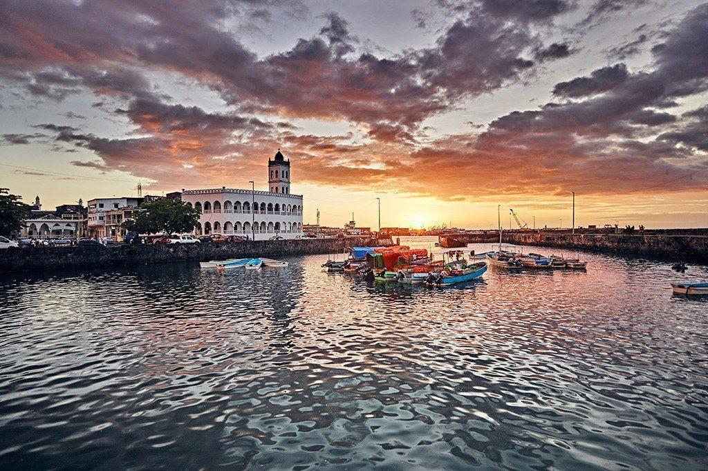

Bienvenue
Ce site vous invite à explorer l’histoire et la culture des Comores. De la lutte pour l’indépendance aux mariages Anda, en passant par les ports et les volcans, chaque page vous plonge dans l’âme comorienne.
"Les Comores sont un carrefour de cultures, une terre de mémoire et d’avenir."

Ce que vous trouverez :
- Origines et indépendance
- Traditions et mariages Anda
- Gastronomie et paysages
Les îles principales
| Île | Capitale | Particularité |
|---|---|---|
| Grande Comore | Moroni | Volcan Karthala |
| Anjouan | Mutsamudu | Île montagneuse |
| Mohéli | Fomboni | Réserve marine |